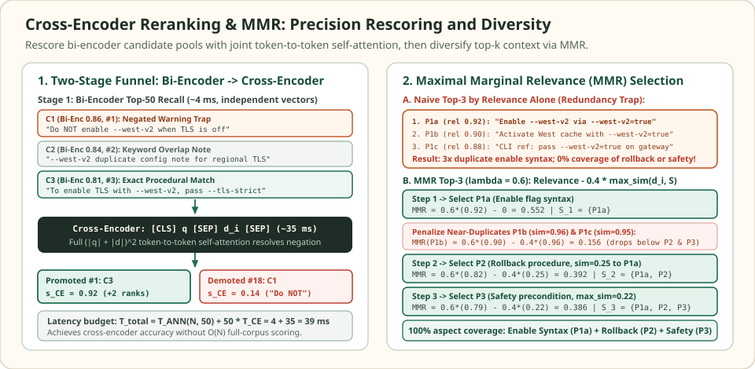

Cross-encoder reranking and MMR: refine top-k precision and eliminate redundancy
First-stage retrievers—whether BM25, dense bi-encoders, or hybrid RRF—are built for sub-10-millisecond recall across millions of documents. To achieve that speed, a bi-encoder compresses each passage into a single vector offline without ever seeing the user's query, blinding it to fine-grained token interactions such as negation, relational directionality, and multi-condition conjunctions.
Even after a second-stage cross-encoder rescores the top-$K$ candidates with full query-to-document self-attention, a second failure mode appears at prompt assembly: top-$k$ redundancy. Because enterprise corpora routinely contain duplicated runbooks, overlapping chunks, and mirrored release notes, selecting the top $k$ chunks purely by individual relevance fills the context window with near-identical copies of the highest-scoring fact while crowding out secondary steps. Maximal Marginal Relevance (MMR) resolves this by penalizing each candidate for its maximum similarity to already-selected passages.
When three near-duplicate top hits crowd out the rollback procedure
5 candidates · context budget k = 3 · MMR trade-off λ = 0.6
Suppose an operator asks $q = \text{“How do I enable --west-v2 safely and roll it back?”}$ under a strict context budget of $k = 3$ chunks. After cross-encoder rescoring, the top-$5$ candidate pool $\{P_{1a}, P_{1b}, P_{1c}, P_2, P_3\}$ contains three mirrored documentation snippets describing the enable flag ($P_{1a}, P_{1b}, P_{1c}$, pairwise similarity $0.94$–$0.96$), one chunk describing the rollback command ($P_2$), and one chunk stating the pre-flight safety check ($P_3$).


C1) and promote exact procedural answers (C3). Right: Naive top-$3$ selection picks three copies of the enable command ($P_{1a}, P_{1b}, P_{1c}$), whereas MMR ($\lambda = 0.6$) penalizes $P_{1b}, P_{1c}$ after selecting $P_{1a}$ and promotes the rollback ($P_2$) and safety check ($P_3$) chunks.A naive top-$3$ cutoff sorts purely by $\operatorname{sim}_1(d_i, q)$ and returns $\{P_{1a}, P_{1b}, P_{1c}\}$ (scores $0.92, 0.90, 0.88$). The generator receives three paraphrases of --west-v2=true and zero evidence on how to verify safety or roll the flag back. Applying MMR with $\lambda = 0.6$ selects $P_{1a}$ in step $1$ ($0.6 \times 0.92 = 0.552$), then subtracts $0.4 \times \operatorname{sim}_2(d_i, P_{1a})$ in step $2$—Slashing $P_{1b}$ from $0.540$ down to $0.540 - 0.4(0.96) = 0.156$ and promoting $P_2$ ($0.492 - 0.4(0.25) = 0.392$) and $P_3$ ($0.474 - 0.4(0.22) = 0.386$) into the $3$-slot budget.
Step-by-step comparison of Bi-Encoder scores, Cross-Encoder scores, and greedy MMR selection (lambda = 0.6, budget k = 3) across the 5-candidate pool.
| Candidate ID & sub-topic | Bi-Enc $\cos$ | Cross-Enc $\operatorname{sim}_1(d_i, q)$ | $\operatorname{sim}_2(d_i, P_{1a})$ | MMR Step 1 ($S_0 = \emptyset$) | MMR Step 2 ($S_1 = \{P_{1a}\}$) | MMR Step 3 ($S_2 = \{P_{1a}, P_2\}$) |
|---|---|---|---|---|---|---|
| $P_{1a}$: Enable flag syntax (CLI) | $0.84$ | $0.92$ (Rank 1) | $1.00$ | $\mathbf{0.552}$ (Pick #1) | — (in $S_1$) | — (in $S_2$) |
| $P_{1b}$: Enable flag mirror (Runbook) | $0.83$ | $0.90$ (Rank 2) | $0.96$ | $0.540$ | $0.156$ (penalized) | $0.156$ (omitted) |
| $P_{1c}$: Enable flag mirror (FAQ) | $0.82$ | $0.88$ (Rank 3) | $0.95$ | $0.528$ | $0.148$ (penalized) | $0.148$ (omitted) |
| $P_2$: Rollback procedure | $0.76$ | $0.82$ (Rank 4) | $0.25$ | $0.492$ | $\mathbf{0.392}$ (Pick #2) | — (in $S_2$) |
| $P_3$: Safety precondition | $0.74$ | $0.79$ (Rank 5) | $0.22$ | $0.474$ | $0.386$ | $\mathbf{0.386}$ (Pick #3) |
Scroll horizontally to compare the columns. Keyboard: focus the table, then use the left and right arrow keys.
Cross-encoder self-attention vs. bi-encoder compression
A dense bi-encoder computes query and passage representations independently via two forward passes, scoring relevance by a single inner product $\langle E_Q(q), E_P(d) \rangle$. Because $E_P(d)$ is precomputed at indexing time without knowledge of $q$, all token-level nuances inside a $256$-token passage must survive compression into a single $d$-dimensional bottleneck vector.
A cross-encoder (Nogueira & Cho, 2019) concatenates the query and candidate passage into a single token sequence separated by special delimiters and passes the joint sequence through an $L$-layer Transformer encoder:
where $\mathbf{w} \in \mathbb{R}^d$ projects the final-layer $\text{[CLS]}$ representation to a scalar logit and $\sigma(z) = (1 + e^{-z})^{-1}$ calibrates it to a probability. Inside every layer, full multi-head self-attention computes $(|q| + |d|)^2$ pairwise token interactions—allowing query tokens to attend directly to document tokens and vice versa. This resolves three structural blind spots of bi-encoders:
- Negation and modality: In
"Do NOT enable --west-v2 when TLS is off"(C1), attention heads directly bind the negation tokenNOTand conditionoffto the query verbenable, dropping $s_{\text{CE}}$ from $0.86$ (bi-encoder cosine) to $0.14$. - Asymmetric directionality: Cross-attention distinguishes "Service A rate-limits Service B" from "Service B rate-limits Service A", which share identical bag-of-words and nearly identical pooled bi-encoder embeddings.
- Multi-constraint conjunctions: When a query specifies multiple attributes (version, region, error code), cross-attention verifies that each modifier attaches to the right entity rather than appearing scattered across unrelated clauses.
Because a cross-encoder cannot precompute document vectors offline, scoring $K$ candidates requires $K$ forward passes of length $L_q + L_d$ at query time. A two-stage cascade bounds total latency to:
where Stage 1 retrieves $K \in [30, 100]$ candidates from $N$ documents in $3$–$8\text{ ms}$, and Stage 2 batches those $K$ pairs on a GPU in $20$–$50\text{ ms}$.
| Scoring architecture | Query-time complexity (for $K$ candidates) | Offline index footprint | Token interaction fidelity |
|---|---|---|---|
| Bi-Encoder (DPR, BGE, E5) | $1$ query encode $+ O(\log N)$ HNSW dot products ($\sim 4\text{ ms}$) | $1$ vector per chunk ($d \times 4\text{ B}$) | Single pooled vector; misses negation and fine-grained modifier binding |
| Late Interaction (ColBERT MaxSim) | $1$ query encode $+ |q| \times |d|$ token dot products per candidate ($\sim 12\text{ ms}$) | $|d|$ vectors per chunk ($10$–$40\times$ larger even with 2-bit quantization) | Token-level maximum similarity; strong lexical + phrase alignment |
| Cross-Encoder (MiniLM, BGE-Reranker) | $K$ full Transformer forward passes of length $L_q + L_d$ ($\sim 35\text{ ms}$) | Zero vector overhead (operates on raw text of top-$K$ pool) | Full $(|q| + |d|)^2$ cross-attention across all layers; highest precision |
Maximal Marginal Relevance (MMR) and the novelty-relevance threshold
Given a candidate pool $R$ of size $K$, a relevance function $\operatorname{sim}_1(d_i, q) \in [0, 1]$ (such as the calibrated cross-encoder score $s_{\text{CE}}(q, d_i)$), and an inter-document similarity metric $\operatorname{sim}_2(d_i, d_j) \in [0, 1]$ (typically the cosine similarity between their bi-encoder vectors), Maximal Marginal Relevance (Carbonell & Goldstein, 1998) builds the selected context set $S_k$ greedily over $t = 1, \dots, k$ steps:
with $S_0 = \emptyset$ (where the $\max$ over an empty set is defined as $0$) and $S_t = S_{t-1} \cup \{d^{(t)}\}$. The parameter $\lambda \in [0, 1]$ governs the trade-off: $\lambda = 1$ reduces to standard relevance sorting, while $\lambda = 0$ selects maximally distant passages regardless of query relevance.
When does MMR prefer a slightly lower-relevance novel passage $d_{\text{new}}$ over a higher-relevance near-duplicate $d_{\text{dup}}$? Let $\Delta_{\text{rel}} = \operatorname{sim}_1(d_{\text{dup}}, q) - \operatorname{sim}_1(d_{\text{new}}, q) \ge 0$ be the relevance gap, and let $\Delta_{\text{sim}} = \max_{d_j \in S} \operatorname{sim}_2(d_{\text{dup}}, d_j) - \max_{d_j \in S} \operatorname{sim}_2(d_{\text{new}}, d_j) > 0$ be the reduction in redundancy. Then $d_{\text{new}}$ strictly outscores $d_{\text{dup}}$ in MMR if and only if:
In the opening puzzle ($\lambda = 0.6$, so $\frac{1-\lambda}{\lambda} = \frac{2}{3}$), comparing the duplicate $P_{1b}$ ($\operatorname{sim}_1 = 0.90$, $\operatorname{sim}_2 = 0.96$) against the rollback passage $P_2$ ($\operatorname{sim}_1 = 0.82$, $\operatorname{sim}_2 = 0.25$) gives $\Delta_{\text{rel}} = 0.08$, which is far below the novelty threshold $\frac{2}{3}(0.96 - 0.25) = 0.473$—so $P_2$ wins by a wide margin ($0.392$ vs. $0.156$).
Guarding against irrelevant outliers: If the candidate pool $R$ contains only $1$ or $2$ truly relevant documents and $48$ irrelevant noise chunks, pure MMR with $\lambda \le 0.7$ will actively select off-topic noise in steps $2\dots k$ because irrelevant chunks have near-zero similarity ($\operatorname{sim}_2 \approx 0$) to the first selected passage. Production pipelines therefore apply a hard relevance floor $\tau_{\text{min}}$ (for example, $s_{\text{CE}}(q, d_i) \ge 0.35$) to prune $R$ before running greedy MMR selection.
Prompt ordering and the "Lost in the Middle" U-curve
Once Cross-Encoder reranking and MMR produce the final $k$ passages $(d^{(1)}, d^{(2)}, \dots, d^{(k)})$, the order in which they are concatenated into the LLM prompt still affects generation accuracy. Liu et al. (2024) demonstrated that causal Transformer language models exhibit a strong U-shaped position bias when extracting facts from multi-document contexts: recall is highest when the critical evidence sits at the very beginning (primacy) or very end (recency, immediately adjacent to the user question and generation cursor) of the context block, and drops by $10$–$25$ percentage points when buried in the middle slots.
Instead of appending passages in monotonic descending order $[d^{(1)}, d^{(2)}, d^{(3)}, d^{(4)}, d^{(5)}]$—which pushes the $3$rd and $4$th passages into the attention trough—a sides-first (alternating outer-in) interleaving places the highest-scoring passage at index $0$, the second-highest at index $k-1$ (closest to the final prompt instruction), the third at index $1$, and the lowest-scoring passages in the center.
# Verify the 5-candidate Cross-Encoder + MMR puzzle and Lost-in-the-Middle ordering
candidates = {
"P1a": {"bi": 0.84, "ce": 0.92, "topic": "Enable flag syntax (CLI)"},
"P1b": {"bi": 0.83, "ce": 0.90, "topic": "Enable flag mirror (Runbook)"},
"P1c": {"bi": 0.82, "ce": 0.88, "topic": "Enable flag mirror (FAQ)"},
"P2": {"bi": 0.76, "ce": 0.82, "topic": "Rollback procedure"},
"P3": {"bi": 0.74, "ce": 0.79, "topic": "Safety precondition"},
"P_noise": {"bi": 0.71, "ce": 0.12, "topic": "Unrelated billing FAQ"},
}
# Symmetric pairwise similarity matrix sim_2(d_i, d_j)
sim2_pairs = {
("P1a", "P1b"): 0.96, ("P1a", "P1c"): 0.95, ("P1b", "P1c"): 0.94,
("P1a", "P2"): 0.25, ("P1b", "P2"): 0.24, ("P1c", "P2"): 0.23,
("P1a", "P3"): 0.22, ("P1b", "P3"): 0.21, ("P1c", "P3"): 0.20,
("P2", "P3"): 0.20,
}
def get_sim2(a, b):
if a == b:
return 1.0
return sim2_pairs.get((a, b), sim2_pairs.get((b, a), 0.05))
def select_mmr(pool, k=3, lam=0.6, tau_min=0.35):
# 1. Apply calibrated cross-encoder relevance floor tau_min
valid_ids = [cid for cid, meta in pool.items() if meta["ce"] >= tau_min]
selected = []
trace = []
while len(selected) < k and len(selected) < len(valid_ids):
best_id, best_score = None, -float("inf")
step_scores = {}
for cid in valid_ids:
if cid in selected:
continue
rel = pool[cid]["ce"]
max_red = max((get_sim2(cid, s) for s in selected), default=0.0)
mmr_score = round(lam * rel - (1.0 - lam) * max_red, 3)
step_scores[cid] = mmr_score
if mmr_score > best_score:
best_id, best_score = cid, mmr_score
selected.append(best_id)
trace.append((best_id, best_score, step_scores))
return selected, trace
# Verify Naive Top-3 vs MMR Top-3 (lambda = 0.6)
naive_top3 = sorted(
[cid for cid, m in candidates.items() if m["ce"] >= 0.35],
key=lambda cid: candidates[cid]["ce"],
reverse=True,
)[:3]
assert naive_top3 == ["P1a", "P1b", "P1c"] # All 3 slots wasted on flag syntax!
mmr_top3, mmr_trace = select_mmr(candidates, k=3, lam=0.6, tau_min=0.35)
assert mmr_top3 == ["P1a", "P2", "P3"]
assert mmr_trace[0][1] == 0.552 # Step 1: P1a (0.6 * 0.92)
assert mmr_trace[1][2] == {"P1b": 0.156, "P1c": 0.148, "P2": 0.392, "P3": 0.386}
assert mmr_trace[2][2] == {"P1b": 0.156, "P1c": 0.148, "P3": 0.386}
# Ordering for LLM context assembly (sides-first U-curve placement)
def order_outer_in(ranked_docs):
left, right = [], []
for idx, doc_id in enumerate(ranked_docs):
if idx % 2 == 0:
left.append(doc_id)
else:
right.append(doc_id)
return left + list(reversed(right))
prompt_order = order_outer_in(mmr_top3)
assert prompt_order == ["P1a", "P3", "P2"] # Top-1 at start, Top-2 at end adjacent to query
print("Naive Top-3:", naive_top3)
print("MMR Top-3 (lambda=0.6):", [(cid, score) for cid, score, _ in mmr_trace])
print("U-curve prompt order:", prompt_order)Check the operating assumptions
Why can a cross-encoder detect that "Do NOT enable --west-v2 when TLS is off" is a warning rather than an enablement instruction, while a bi-encoder ranks it #1?
A bi-encoder pools the entire chunk into a single static vector before seeing the query, so high lexical and semantic overlap on "--west-v2", "enable", and "TLS" produces a high cosine score (0.86). A cross-encoder concatenates [CLS] q [SEP] d [SEP] and computes token-to-token self-attention across all layers, binding the negation token "NOT" directly to the query intent.
In the opening puzzle, what is the largest value of lambda in (0, 1) for which MMR still selects the rollback passage P2 (sim_1 = 0.82, sim_2 = 0.25) ahead of the near-duplicate P1b (sim_1 = 0.90, sim_2 = 0.96) in Step 2?
By the exact threshold condition Delta_rel < ((1 - lambda) / lambda) * Delta_sim, we need 0.08 < ((1 - lambda) / lambda) * (0.96 - 0.25) = 0.71 * (1 - lambda) / lambda. Solving 0.79 * lambda < 0.71 yields lambda < 0.71 / 0.79 = 0.8987. Thus any lambda up to 0.89 still promotes P2 over the duplicate P1b.
Why must a relevance floor tau_min be applied before running greedy MMR on a top-50 candidate pool?
MMR subtracts (1 - lambda) * max_sim(d_i, d_j). Completely irrelevant noise chunks in the tail of a top-50 pool have near-zero similarity (sim_2 approx 0) to the first selected passage, so they suffer zero diversity penalty and can beat moderately similar relevant passages unless filtered out by s_CE(q, d_i) >= tau_min first.
Sources
- Carbonell & Goldstein: The Use of MMR, Diversity-Based Reranking for Reordering Documents and Producing Summaries, SIGIR 1998 (original Maximal Marginal Relevance formulation).
- Nogueira & Cho: Passage Re-ranking with BERT, arXiv 2019 (cross-encoder
[CLS] q [SEP] d [SEP]passage rescoring architecture). - Liu et al.: Lost in the Middle: How Language Models Use Long Contexts, TACL 2024 (U-shaped primacy and recency utilization curve across retrieved document positions).